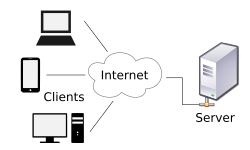

17. Client-Server Architecture#
17.1. Introduction#
Client-server architecture, also often called the network computing model,
You probably interact with client server architecture everyday. When you browse the internet, you use web servers, when you send an email, you use an email server. File Servers Domain Name Server (DNS) Server-side architecture encompasses the design and organization of components responsible for processing and managing logic on the server side of an application. This typically includes essential elements such as the web server, application server, database server, and middleware.
In the client-server model, tasks or workloads are divided between servers, which provide computing resources or services, and clients, which request these services. While clients and servers usually interact over a computer network on different hardware, they can also exist on the same system. A server host operates one or more server programs, sharing its resources with clients.
It’s much easier to visualize!

17.2. Client Server Communication#
The client software can also communicate with server software within the same computer. Communication between servers, such as to synchronize data, is sometimes called inter-server or server-to-server communication.
17.3. Web Servers#
The web server, such as Apache or Nginx, manages incoming requests from clients and handles HTTP requests and responses, serving static files like HTML, CSS, and JavaScript. The application server, including options like Node.js or Django, executes application logic and generates dynamic content. It processes business logic, interacts with databases, and performs necessary computations.
17.4. Databse Servers#
The database server, such as MySQL, Firebase, or MongoDB, is responsible for storing, retrieving, and managing data, ensuring data integrity, and supporting queries and transactions. Middleware facilitates communication between the web server and application server and can handle tasks such as authentication, logging, and session management.
17.5. Architectures within Server-Side#
There are several common architectures used in server-side development. In a monolithic architecture, the application is built as a single unit, integrating all components—web server, application server, and database—into one system. While this approach can simplify development, it may become unwieldy as the application grows. Microservices architecture, on the other hand, breaks the application into smaller, independent services that communicate over a network. Each service handles a specific function and can be developed, deployed, and scaled independently. Serverless architecture involves splitting application logic into functions or services executed in response to events, with the cloud provider managing infrastructure, scaling, and maintenance, allowing developers to focus on code.
17.6. Scalability#
Scalability and load balancing are crucial for managing increased load on server-side applications. Vertical scaling involves adding more resources, such as CPU or RAM, to a single server to handle higher demand. Horizontal scaling involves adding more servers to distribute the load, with load balancers used to distribute incoming requests across multiple servers to ensure even distribution and fault tolerance.
17.7. Security#
Security considerations are vital for protecting server-side applications. Authentication and authorization ensure that users are correctly identified and have permission to access specific resources. Data encryption protects data during transmission and while stored. Firewalls and intrusion detection systems monitor and control incoming and outgoing network traffic based on security rules.
17.8. Performance#
Performance optimization techniques also play a significant role. Caching involves storing frequently accessed data to reduce load times and server strain, while content delivery networks (CDNs) distribute static content across multiple servers worldwide to improve load times and reduce latency. Understanding these components and strategies helps in designing robust, scalable, and efficient server-side solutions.